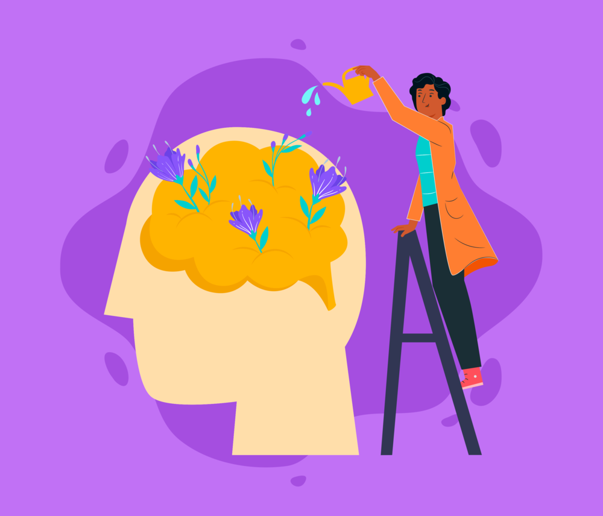

|

|
A importância da saúde mental se dá porque
ela possibilita o ajuste necessário para gerenciar
as emoções positivas e negativas. Portanto, investir
em estratégias que possibilite o equilíbrio das funções
mentais é essencial para um convívio social
mais saudável, é a recomendação da psicóloga do
Hospital Santa Mônica, Ayde Câmara.
Além de ser determinante para a estabilidade
física, a saúde mental está relacionada
à qualidade da interação individual e coletiva.
No cenário atual, buscar alternativas que
possibilitem a harmonia nessas relações é uma
necessidade cada vez mais urgente.
Se você está em busca de medidas que
sinalizem a promoção da saúde mental e
a garantia dos direitos fundamentais associados
ao bem-estar e à qualidade de vida, este é o caminho.
|